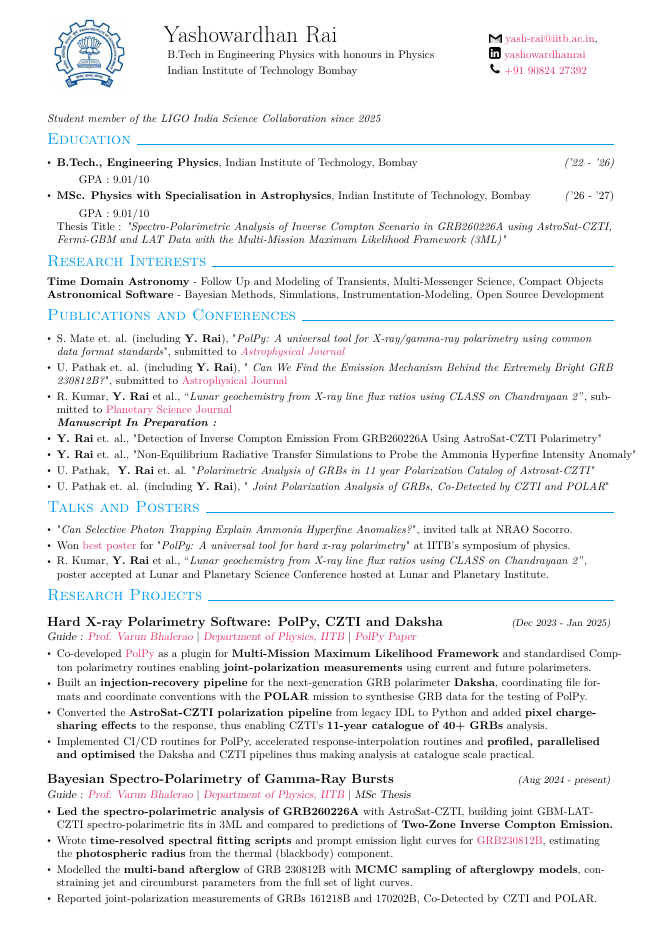

Physics · Astrophysics · IIT Bombay
Yashowardhan Rai
I study high-energy astrophysics and multi-messenger science: how gamma-ray bursts radiate, what neutron star mergers tell us about dense matter, and how matter falls onto compact objects.
About
I am doing a B.Tech. in Engineering Physics (2022–26) followed by an MSc in Physics with a specialisation in Astrophysics (2026–27) at the Indian Institute of Technology Bombay. I have been a student member of the LIGO India Science Collaboration since 2025.
My work sits between observation and modelling: fitting real GRB data with Bayesian frameworks, simulating radiative transfer and accretion flows, and training machine-learning models for physics applications.
Research
Hard X-ray Polarimetry Software: PolPy, CZTI and Daksha
Bayesian Spectro-Polarimetry of Gamma-Ray Bursts
Non-LTE Modelling of the Ammonia Hyperfine Intensity Anomaly
GRMHD Modelling of Compact Object Accretion
Mapping Lunar Chemical Abundances using X-ray Fluorescence
Machine Learning for Intelligent Reflective Surfaces
Deep Learning for Satellite Elevation Estimation
Likelihood-Free Parameter Estimation of Gravitational Waves
Publications & talks
Submitted
- S. Mate et al. (incl. Y. Rai), PolPy: A universal tool for X/gamma-ray polarimetry using common data format standards. Astrophysical Journal. Paper
- U. Pathak et al. (incl. Y. Rai), Can We Find the Emission Mechanism Behind the Extremely Bright GRB 230812B? Astrophysical Journal. Paper
- R. Kumar, Y. Rai et al., Lunar geochemistry from X-ray line flux ratios using CLASS on Chandrayaan 2. Planetary Science Journal. Paper
In preparation
- Y. Rai et al., Detection of inverse Compton emission from GRB260226A using AstroSat-CZTI polarimetry.
- Y. Rai et al., Non-equilibrium radiative transfer simulations to probe the ammonia hyperfine intensity anomaly.
- U. Pathak, Y. Rai et al., Polarimetric analysis of GRBs in the 11-year AstroSat-CZTI polarization catalog.
- U. Pathak et al. (incl. Y. Rai), Joint polarization analysis of GRBs co-detected by CZTI and POLAR.
Talks & posters
- Invited talk, NRAO Socorro: Can Selective Photon Trapping Explain Ammonia Hyperfine Anomalies?
- Best poster, IITB symposium of physics: PolPy: A universal tool for hard X-ray polarimetry. Poster
- Poster, Lunar and Planetary Science Conference: Lunar geochemistry from X-ray line flux ratios using CLASS on Chandrayaan 2. Poster
- Presentation, Advanced Astrophysics: Geometry and Observations of Thin Accretion Disks. Slides
- Talk on GRBs, Physics Journal Club, IIT Bombay (Oct 2023). Slides
Curriculum vitae

The full CV: education, research projects, publications, talks, experience and teaching. Opens in your browser's built-in PDF viewer.
Contact
- Email: yash_rai@iitb.ac.in
- GitHub: github.com/yash739
- LinkedIn: yashowardhan-rai